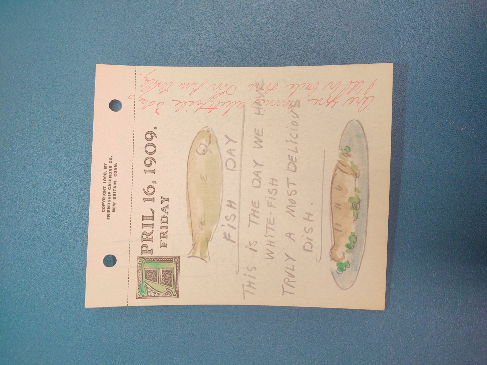

Drawing of a white fish that is alive, then a drawing of
the white fish cooked.—#zmurphy
April 16, 1909. Friday
fish day
This is the day we have white-fish truly a most delicious
dish.
are you having white fish today? I'll be back soon love from
Molly.
This is showing that Mary is cooking fish for dinner and is
asking if Ernst will be attending and having fish with her.—#zmurphy